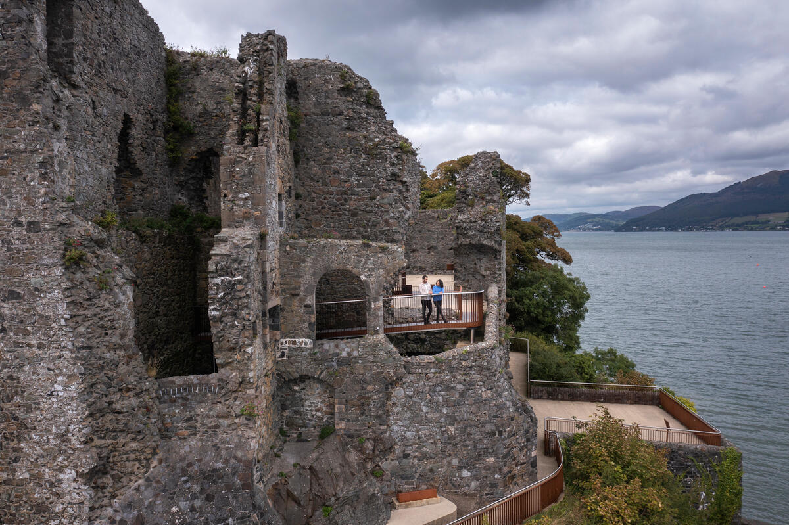

Cooley & Mournes
Two granite mountain ranges separated by Carlingford Lough and connected by a ferry crossing — where the Cooley Mountains of County Louth meet the Mournes of County Down in a single, cross-border walking adventure.
About the Region
Quick Facts
The Landscape
Points of Interest
Carlingford medieval town
Norman port with castle, fortified walls and town gates; centre for oyster farming
Carlingford Lough Ferry
20-minute scenic crossing from Greenore to Greencastle; the boundary between south and north
Slieve Foy (589m)
The dominant peak of the Cooley Mountains with views across Carlingford Lough to the Mournes
Slieve Donard (852m)
Highest peak in Northern Ireland; regular 16km day hike from Newcastle with Irish Sea views to the Isle of Man
The Mourne Wall
35km drystone wall linking 15 summits; built 1904–1922 by Belfast Water Commissioners; extraordinary mountain engineering
Silent Valley Reservoir
Scenic mountain lake at the heart of the Mourne range; perfect rest-day walk
Tollymore Forest Park
630 hectares of ancient woodland with stone bridges and river walks; Game of Thrones filming location
Rostrevor
Small village on Carlingford Lough; Narnia Trail in nearby Kilbroney Park; connection to C.S. Lewis childhood inspiration
Newcastle
Seaside resort and main Mournes base; Victorian promenade, beach access, full range of accommodation
Murlough Nature Reserve
Sand dunes and beach south of Newcastle; excellent sea swimming in summer months
Walking Difficulty
Best Time to Visit
Choose your ideal season based on weather, crowds, and daylight hours.
★ = Best months ✓ = Available
Culture & Heritage
Getting Here
Walking Tours in Cooley & Mournes

Cooley & Mournes Hiking Tour — 8 Days
Cross-border mountain adventure through Celtic legends and granite peaks.
Ireland's Ancient East
Cooley Peninsula Hiking Tour — 5 Days
Ireland's best-kept walking secret — mountain trekking and medieval Carlingford.
Ireland's Ancient EastWhat Our Walkers Say
Ready to Walk Cooley & Mournes?
Explore our curated walking tours and start planning your next adventure.
Get Started